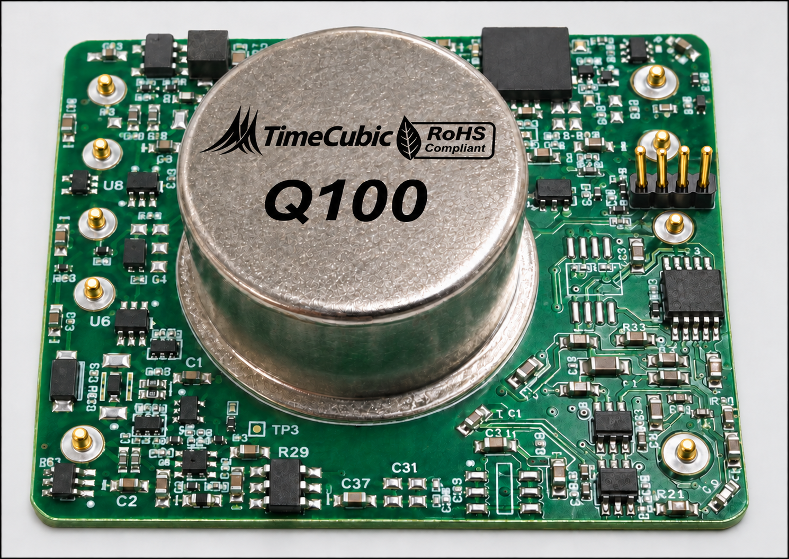
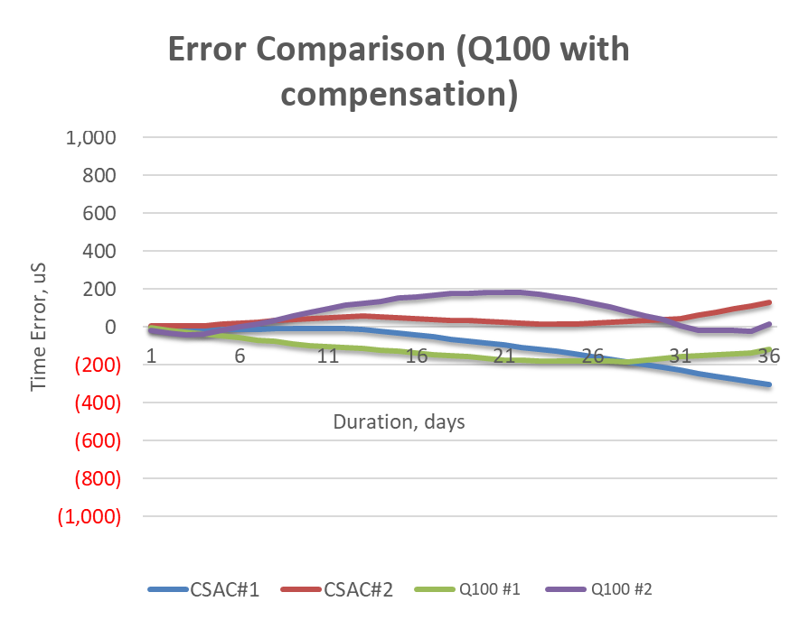

Mechanical Outline
39.1 × 34.0 × 13.7 mmStandard 8-Pin Form Factor (1.54 × 1.34 × 0.54 in)
Hermetically sealed metal enclosure • Pin through-hole mounting for subsea nodes
Measured 60-Day Holdover
±1.0 ms / 60d
Empirical Subsea Blind Drift vs. Chip-Scale Atomic Clock (CSAC)
Core Architectural Highlights
✓
Ultra-Low Power Consumption (<60 mW)
Enables high-precision synchronized timing in underwater nodes and isolated sensors without requiring massive battery packs.
✓
1PPS Input & Output Disciplining
Synchronizes to external GNSS / atomic reference clocks prior to subsea deployment, disciplining to 1 ns RMS phase error and <1×10-12 in frequency.
✓
Continuous 1-Second Phase Measurement
Built-in phase detection engine measures and reports real-time drift with ≤1 nanosecond resolution over an integrated RS232 digital serial port.
Technical Specifications (Rev O Standard)
| Supply Voltage | +3.3V DC (±5%) |
| Steady-State Power | 65 mW typ (<75 mW max @ 25°C) |
| Warm-Up Power & Time | 220 mW (1 min typ to locked holdover) |
| Standard Frequencies | 10 MHz standard (5, 8.192, 16.384 MHz available) |
| Output Waveform | HCMOS (VOH ≥2.4V, VOL ≤0.4V, 50Ω load) |
| 1PPS Synchronization | 1 ns RMS Phase Error • <1×10-12 Frequency |
| Subsea Blind Holdover | ±1.0 ms / 60 days (constant temp, mathematical model) |
| Aging Rate (Free-Run) | ±0.07 ppb/day typ (±0.5 ppb/day max) |
| Operating Temperature | -10°C to +50°C (Extended -40°C to +85°C available) |
| Digital Communications | RS232 (57600 baud, 8-N-1) • 1-sec continuous phase report |
| Package Dimensions | 39.1 × 34.0 × 13.7 mm (1.54 × 1.34 × 0.54 in) |
Pin Configuration
| Pin # | Signal | Description |
|---|---|---|
| 1 | VDD | +3.3V DC Power Input |
| 2 | 1PPS_IN | 1PPS Reference Input for Disciplining |
| 3 | 1PPS_OUT | Synchronized 1PPS Pulse Output |
| 4 | RF_OUT | 10 MHz HCMOS Clock Output |
| 5 | GND | Ground |
| 6 | RXD | RS232 Serial Data Receive |
| 7 | TXD | RS232 Serial Telemetry Data Transmit |
| 8 | LOCK_IND | Discipline Status Indicator (High = Locked) |
Ordering Evaluation Units for Model Q100
Evaluation boards with USB-to-RS232 bridges and SMA clock outputs are available.